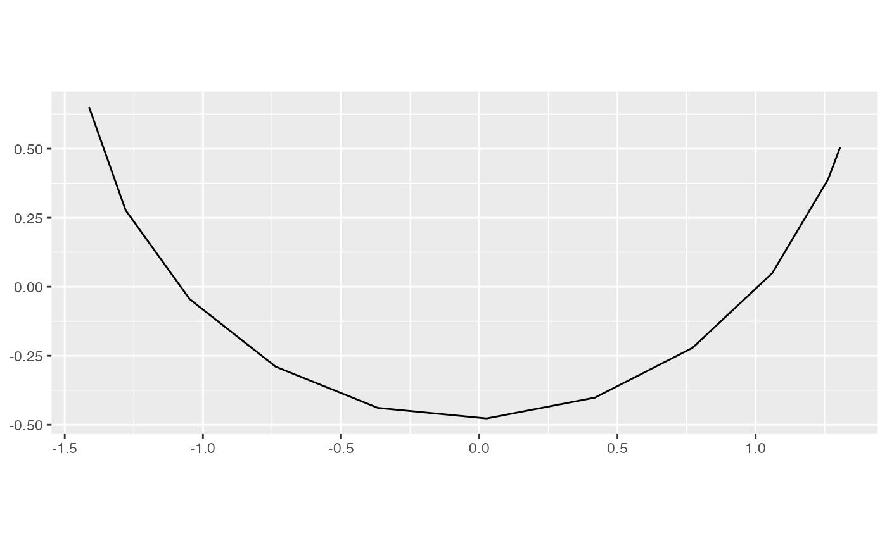

Compute distance matrix from bases.
path_dist(history)
| history | history of the plots |
|---|
if (FALSE) { grand <- interpolate(save_history(flea[, 1:6], max = 50), 0.2) # The grand tour ----------------------------- # Look at the tour path in a tour, how well does it cover a sphere # Using MDS d <- path_dist(grand) ord <- as.data.frame(MASS::isoMDS(d)$points) qplot(V1, V2, data = ord, geom="path") + coord_equal() + labs(x = NULL, y = NULL) } # 5 guided tours ----------------------------- holes1d <- guided_tour(holes(), 1) tour_reps <- replicate(5, save_history(flea[, 1:6], holes1d, max = 10), simplify = FALSE)#>#> Value 0.490 946.2 % better - NEW BASIS #> Value 0.204 334.8 % better - NEW BASIS #> Value 0.863 323.6 % better - NEW BASIS #> Value 1.113 28.9 % better - NEW BASIS #> Value 1.290 15.9 % better - NEW BASIS #> Value 1.339 3.8 % better - NEW BASIS #> Value 1.345 0.5 % better - NEW BASIS #> Value 1.357 0.9 % better - NEW BASIS #> Value 1.368 0.8 % better - NEW BASIS #> Value 1.368 0.0 % better #> Value 1.368 0.0 % better #> Value 1.368 0.1 % better #> Value 1.369 0.1 % better #> Value 1.368 0.1 % better #> Value 1.369 0.1 % better #> Value 1.369 0.1 % better - NEW BASIS #> Value 1.369 0.0 % better #> Value 1.369 0.0 % better #> Value 1.369 0.0 % better #> Value 1.369 0.0 % better #> Value 1.369 0.0 % better #> Value 1.369 0.0 % better #> Value 1.369 0.0 % better #> Value 1.369 0.0 % better #> Value 1.369 0.0 % better #> Value 1.369 0.0 % better #> Value 1.369 0.0 % better #> Value 1.369 0.0 % better #> Value 1.369 0.0 % better #> Value 1.369 0.0 % better #> Value 1.369 0.0 % better #> Value 1.369 0.0 % better #> Value 1.369 0.0 % better #> Value 1.369 0.0 % better #> Value 1.369 0.0 % better #> Value 1.369 0.0 % better #> Value 1.369 0.0 % better #> Value 1.369 0.0 % better #> Value 1.369 0.0 % better #> Value 1.369 0.0 % better #> No better bases found after 25 tries. Giving up. #> Final projection: #> 0.369 0.321 0.390 0.356 0.513 0.468#>#> Value 0.549 111.5 % better - NEW BASIS #> Value 0.860 231.3 % better - NEW BASIS #> Value 1.041 21.0 % better - NEW BASIS #> Value 1.213 16.6 % better - NEW BASIS #> Value 1.271 4.7 % better - NEW BASIS #> Value 1.317 3.6 % better - NEW BASIS #> Value 1.336 1.4 % better - NEW BASIS #> Value 1.342 0.5 % better - NEW BASIS #> Value 1.345 0.2 % better - NEW BASIS #> Value 1.351 0.5 % better - NEW BASIS #> Value 1.363 0.9 % better - NEW BASIS#>#> Value 0.469 243.7 % better - NEW BASIS #> Value 0.641 369.5 % better - NEW BASIS #> Value 0.918 43.3 % better - NEW BASIS #> Value 0.992 8.0 % better - NEW BASIS #> Value 1.258 26.9 % better - NEW BASIS #> Value 1.321 5.0 % better - NEW BASIS #> Value 1.343 1.7 % better - NEW BASIS #> Value 1.351 0.6 % better - NEW BASIS #> Value 1.362 0.8 % better - NEW BASIS #> Value 1.366 0.3 % better - NEW BASIS #> Value 1.367 0.1 % better #> Value 1.367 0.1 % better #> Value 1.367 0.1 % better #> Value 1.367 0.1 % better #> Value 1.366 0.1 % better #> Value 1.368 0.2 % better - NEW BASIS#>#> Value 0.549 201.1 % better - NEW BASIS #> Value 0.533 192.7 % better - NEW BASIS #> Value 1.172 119.7 % better - NEW BASIS #> Value 1.283 9.5 % better - NEW BASIS #> Value 1.349 5.2 % better - NEW BASIS #> Value 1.364 1.1 % better - NEW BASIS #> Value 1.366 0.2 % better - NEW BASIS #> Value 1.368 0.1 % better - NEW BASIS #> Value 1.369 0.1 % better #> Value 1.368 0.0 % better #> Value 1.369 0.1 % better #> Value 1.369 0.1 % better #> Value 1.368 0.0 % better #> Value 1.369 0.1 % better #> Value 1.369 0.1 % better #> Value 1.369 0.1 % better #> Value 1.369 0.1 % better #> Value 1.369 0.1 % better #> Value 1.369 0.1 % better - NEW BASIS #> Value 1.369 0.0 % better #> Value 1.369 0.0 % better #> Value 1.369 0.0 % better #> Value 1.369 0.0 % better #> Value 1.369 0.0 % better #> Value 1.369 0.0 % better #> Value 1.369 0.0 % better #> Value 1.369 0.0 % better #> Value 1.370 0.0 % better #> Value 1.369 0.0 % better #> Value 1.369 0.0 % better #> Value 1.369 0.0 % better #> Value 1.369 0.0 % better #> Value 1.369 0.0 % better #> Value 1.369 0.0 % better #> Value 1.369 0.0 % better #> Value 1.369 0.0 % better #> Value 1.369 0.0 % better #> Value 1.369 0.0 % better #> Value 1.369 0.0 % better #> Value 1.370 0.0 % better #> Value 1.369 0.0 % better #> Value 1.369 0.0 % better #> Value 1.369 0.0 % better #> No better bases found after 25 tries. Giving up. #> Final projection: #> 0.374 0.339 0.383 0.357 0.506 0.464#>#> Value 0.826 9.3 % better - NEW BASIS #> Value 1.153 52.6 % better - NEW BASIS #> Value 1.257 9.0 % better - NEW BASIS #> Value 1.333 6.1 % better - NEW BASIS #> Value 1.367 2.5 % better - NEW BASIS #> Value 1.368 0.1 % better #> Value 1.368 0.1 % better #> Value 1.368 0.1 % better #> Value 1.368 0.1 % better #> Value 1.369 0.1 % better - NEW BASIS #> Value 1.369 0.0 % better #> Value 1.369 0.1 % better #> Value 1.369 0.0 % better #> Value 1.369 0.1 % better #> Value 1.369 0.1 % better #> Value 1.369 0.0 % better #> Value 1.369 0.0 % better #> Value 1.369 0.1 % better #> Value 1.369 0.0 % better #> Value 1.369 0.1 % better #> Value 1.369 0.1 % better #> Value 1.369 0.0 % better #> Value 1.369 0.0 % better #> Value 1.369 0.0 % better #> Value 1.369 0.1 % better #> Value 1.369 0.0 % better #> Value 1.369 0.0 % better #> Value 1.369 0.0 % better #> Value 1.369 0.0 % better #> Value 1.369 0.1 % better #> Value 1.369 0.1 % better #> Value 1.369 0.0 % better #> Value 1.369 0.0 % better #> Value 1.369 0.0 % better #> No better bases found after 25 tries. Giving up. #> Final projection: #> 0.379 0.325 0.388 0.336 0.494 0.494tour_reps2 <- lapply(tour_reps, interpolate, 0.2) bases <- unlist(lapply(tour_reps2, as.list), recursive = FALSE) class(bases) <- "history_list" index_values <- paths_index(tour_reps2, holes()) d <- path_dist(bases) ord <- as.data.frame(cmdscale(d, 2)) info <- cbind(ord, index_values) if (require("ggplot2")) { ggplot(data = info, aes(x=step, y=value, group = try)) + geom_line() ggplot(data = info, aes(x=V1, y=V2, group = try)) + geom_path() + geom_point(aes(size = value)) + coord_equal() last_plot() + facet_wrap(~ try) }